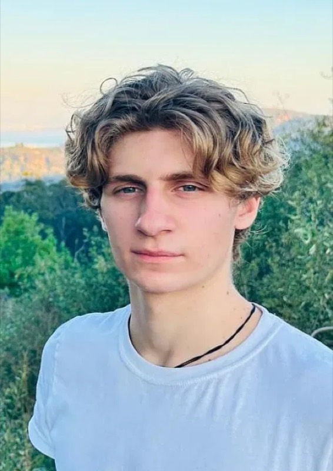
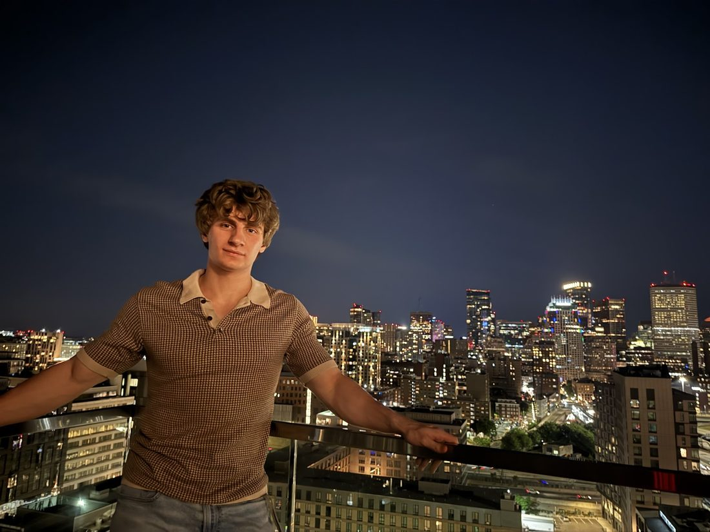

Product Designer who builds.
Every project starts as a drop. I design it and ship it.
Every project starts as a drop. I design it and ship it.

I design software and build the frontend myself, so what I draw is what ships. Based in Boston, graduating from Northeastern in December 2026.
More about meEight projects, from two co-ops to things I built on my own.

I design software and build the frontend myself, so what I draw is what ships.
I grew up in awe of console interfaces, and what stayed with me was how much a single object could hold. I’ve made three small games in Unity, and I study Computer Science and Interaction Design at Northeastern, with a minor in History.
CurrentlyFinishing my degree and starting new projects, keeping each one fluid from first idea to launch and after.
Graduating December 2026. Open to full-time from January 2027.